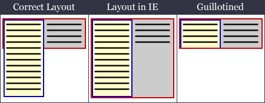

The Guillotine is a bug that chops off the bottom part of floated elements when certain links are hovered over.
The effect is very much similar to that of the IE/Win Unscrollable Content Bug, but this one is easier to setup with less content and more dynamic in its, er, execution.
Here's a quick example to illustrate what we are talking about.
IE Users: Let's hover over those links to the right to witness some really interesting phenomena.
This is a floated div. You may use this link to fix things once you've done the butchering.
The content in the bottom of the float, such as this paragraph, is vulnerable to the Guillotine.
Update July 2007: IE7 is showing a new version of this supposedly fixed bug, demoed at css-class.com.
Now that we've got a glimpse of the Guillotine, let's examine what we should have at hand to set one up.
The main ingredients for a "properly working" Guillotine are:
The non-floated content may or may not be wrapped in a block element, such as p or div.
The a:hover style rules of the Guillotine invoking links could be anything which changes, among other things:
<!-- Example Layout for a Guillotine Invoking Situation -->
<div id="container">
<div id="floated">
This is the floated content.
It is vulnerable to the Guillotine.
</div>
This is the non floated content inside the container.
Guillotine invoking links should be in this content.
</div>
/* Example Style Rules for a Guillotine Invoking Link */
a:hover {
background: none #FFFFCC scroll repeat 0% 0%;
/* and/or */
padding: 5px;
/* and/or */
text-style: italic;
/* and/or */
border-bottom: #0000FF 1px solid;
}
An exception is changing the text colour, which does not invoke the bug.
As you can see, it's pretty easy to find yourself trapped in a Guillotine. Armed with the above prerequisites, let's move on to the scary stuff: Guillotine in action.
If the container has a dimension specified, IE will automatically enclose all floats inside the container. This is in gross violation of the specs, but as we have come to know rather painfully, it is something to be expected from this browser. Thus, in IE, the container will stretch down to contain a float that has exceeded the height of non-floated content.
Live example | IE6 Screenshot
This is a float. It is 200px wide, has a blue border and yellow background. It should not be contained in the container div.
Because the container is assigned a width, IE encloses the float in the container.
This is the container. It is 400px wide, has a red border and grey background.
(If you look closely enough, you'll see that the IE 3px text jog is also in action. Let's leave that to its own demo and focus on the current nuisance.)
A Guillotine invoking link can switch off this auto-enclosing behaviour. When such a link is given a hover, the bottom border of the container jumps up to enclose only the non-floated content, which is the correct way to layout the elements. However, when the container shrinks, the part of the floated box which falls below the non-floated content gets hidden, and only the part that is appearing above the bottom border of the container remains visible.

In the live demo which follows, notice how the links in the first two lines in the non-floated content do not invoke the bug, and actually reset the Guillotine when given a hover. All other links in the non-floated content will invoke the bug.
Any link in the floated div will also reset the Guillotine.
Live Example | Screenshot Before Execution | Screenshot After Execution
This is the floated div.
Any link in this div will reset the Guillotine.
Content
More Content
And More Content
Even More Content
Until the float is taller than the non-floated content
It might seem that not specifying a dimension to the container, although not practical always, would prevent the bug, since the float will not be auto-enclosed in the first place. But IE being IE, even when the float is not auto enclosed a Guillotine invoking link will chop off the bottom part of the float under certain conditions.
For the Guillotine to occur in this context, the float should not be cleared by any element in the page. In this variation of the bug, the float is chopped not by the container but by the body itself.
Live Example | Screenshot Before Execution | Screenshot After Execution
This is not very elegant, but the only thing that works at the moment is to have an empty div to clear everything, outside and after the container.
Live Example
This is the floated div.
Any link in this div will reset the Guillotine.
Content
More Content
And More Content
Even More Content
Until the float is taller than the non-floated content
This is a paragraph that comes after the container
<!-- Example Layout to Fix the Guillotine with Markup -->
<div id="container">
<div id="floated">
This is the floated content.
It is vulnerable to the Guillotine.
</div>
This is the non floated content inside the container.
Guillotine invoking links should be in this content.
</div>
<div style="clear: both"></div>
The float should be cleared inside the container for it to be enclosed. Using an empty clearing div was the preferred way to do it before the method of Clearing Floats without Structural Markup was introduced. If the float is cleared the old fashioned way using a div, the Guilotine will not be invoked.
The clearing div should appear inside the container div, after the actual content.
Live Example
This is the floated div.
Any link in this div will reset the Guillotine.
Content
More Content
And More Content
Even More Content
Until the float is taller than the non-floated content
<!-- Example Layout to Fix the Guillotine with Markup -->
<div id="container">
<div id="floated">
This is the floated content.
It is vulnerable to the Guillotine.
</div>
This is the non floated content inside the container.
Guillotine invoking links should be in this content.
<div style="clear: both"></div>
</div>
But using structural markup without semantics is not very appealing; after all, it's the reason why this clearing method was introduced. It relies on the :after pseudo-class for standard compliant browsers (Mozilla & Co.), and specifying a height to the container for, ahem, the sub-standard browser IE which does not support :after. But a dimension specified container is exactly the thing needed to trigger the IE Guillotine, so this "generated clearing element" method on its own cannot solve the problem.
What we need is a way to use the :after method and still get things working. Fortunately, the Holly Hack comes to our rescue.
First we should contain the non-floated content inside a block level element such as p or div if it is not already. Wrapping text this way is semantically correct, so the standards advocating folks need not be upset. Then we give a height to this block element using the Holly hack, so that only IE sees the dimension. Lo and behold, the bug vanishes.
Live Example
This is the floated div.
Any link in this div will reset the Guillotine.
Content
More Content
And More Content
Even More Content
Until the float is taller than the non-floated content
<!-- Example Layout with the Holly Hack applied -->
<div id="container">
<div id="floated">
This is the floated content.
It is vulnerable to the Guillotine.
</div>
<p class="hollyhacked">
This is the non floated content inside
the container. Guillotine invoking links
should be in this content.</p>
</div>
/* Example style rules for the above fix */
#container {
/* Set margins, padding, borders, colours etc. */
}
/* Contain the floats using the :after method */
#container:after {
content: ".";
display: block;
height: 0;
clear: both;
visibility:hidden;
}
/* \*/
* html #container {
height: 1%;
}
/* */
/* End float containing rules */
#floated {
/* Set margins, padding, borders, colours etc. */
float: left; /* float the block */
}
/* Apply Holly Hack to the non-floated content */
/* \*/
* html .hollyhacked {
height: 1%;
}
/* */
It would have been great if this was the end, but IE is the kind of fat lady who never leaves the stage. Using the Holly hack to give a dimension to the non-floated content block, while getting rid of the Guillotine, triggers the IE's flawed float model plus it's own set of complications.
However, the effect of the Guillotine is noticeable only when the float is taller than the non-floated content that follows it. Therefore, the non-floated content will rarely continue below the float in such a situation. This gives us some chance of safely applying the Holly hack without ruining the layout.
As you can see, there's no perfect fix for the Guillotine bug. The designer should pick the solution according to the context and be willing to compromise. It's difficult, but what isn't with IE?
{kind=link}
{kind=link}
{kind=link}
{kind=link}
{kind=link}